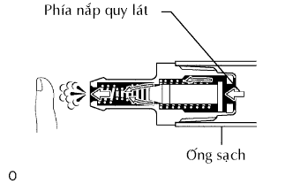

VAN THÔNG HƠI > KIỂM TRA |
| 1. KIỂM TRA CỤM VAN THÔNG HƠI |
|  |
Lắp ống sạch vào van thông hơi.
Kiểm tra sự hoạt động của van thông hơi.
Thổi khí vào phía nắp quy lát và kiểm tra rằng khí đi qua dễ dàng.
Thổi khí vào phía đường ống nạp và kiểm tra rằng khí đi qua rất khó.
Nếu kết quả không như tiêu chuẩn, hãy thay thế cụm van thông hơi.
Tháo ống sạch ra khỏi van thông hơi.